Reolink + Home Assistant + Frigate
Note: This is generated from a transcript from one of my YouTube videos
Reolink Duo 3 PoE: A 180-Degree Vision for Your Smart Home Security
Hey there, smart home enthusiasts! Today, I’m diving deep into the Reolink Duo 3 PoE, a fascinating camera that’s essentially two cameras in one promising a massive 180 degrees of coverage. I’m going to show you the dual-camera stitching magic, whether that join line is actually noticeable, and how it integrates seamlessly with Home Assistant and Frigate. We’ll also explore why substreams might matter a little more than you think. I’ll compare it head-to-head with my trusty RLC-520A, dive into the Reolink apps to show you how to configure everything properly, and explore how those standard RTSP streams make this camera work with pretty much anything. I’ll be diving into all the details, so if that sounds like fun, then stick around.
My Existing Reolink Setup
The RLC-520As are great cameras, don’t get me wrong, but they’ve got a fairly standard field of view that leaves some blind spots in the front garden area. That’s where the Reolink Duo 3 PoE comes in. Reolink sent me this camera in exchange for an honest review, and it’s essentially an upgrade for my existing RLC-520A, but with one major difference: it offers a massive 180-degree field of view.
Introducing the Reolink Duo 3 PoE: A Wider Perspective
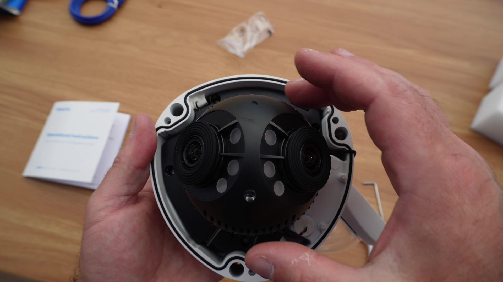 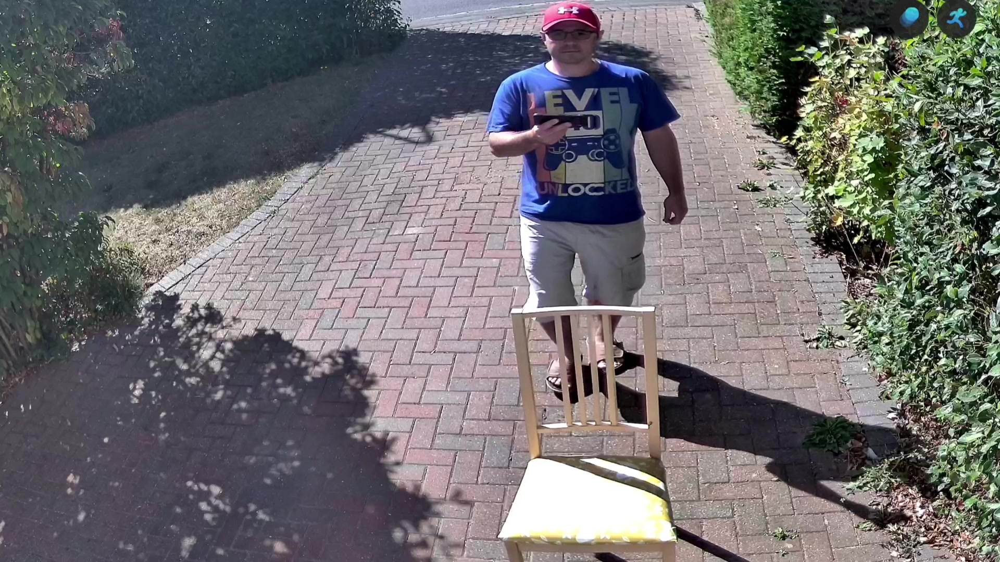 The way the Duo 3 PoE achieves that wide view is actually quite clever. Rather than using a single ultra-wide lens, which could create massive fisheye distortion and make everything look warped, the Duo 3 PoE is using two separate cameras side-by-side. Each camera captures its own 90-degree section, and then the camera's internal processing effectively stitches those two feeds together in real-time to create a seamless ultra-wide stream.What’s particularly neat is that you can actually adjust the angle of each camera when you first set it up. This lets you fine-tune exactly what you want to capture and helps minimize that join line where the two feeds meet. I was genuinely curious to see how obvious this seam would be in practice. After all, if it’s distracting or creates weird visual artifacts, then the whole concept falls apart.
The Power of Substreams for Frigate
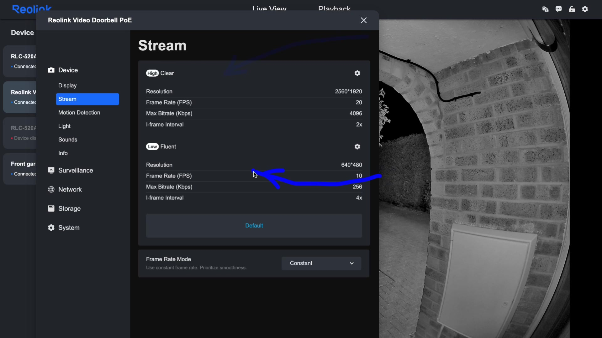The camera simultaneously captures two output streams: you get a high-resolution mainstream (and in the Duo 3 PoE’s case, that’s a whopping 7680x2160) and a lower-resolution substream that is 1536x432, which maintains the same aspect ratio. Frigate uses that lower- quality stream for motion detection and object recognition, which stops your hardware from getting absolutely hammered. This is particularly important with the Duo 3 PoE because that 180-degree view creates an unusual ultra-wide aspect ratio stream with quite a high resolution. Without substreams, you’d be asking your CPU or hardware accelerators to process every single pixel of that 7680x2160 image for detection.
Meanwhile, you still get to record the full-quality mainstream to disk when you actually need to see the details, like identifying someone’s face or reading a license plate. It’s kind of the best of both worlds. All of my Reolink cameras are PoE-powered, so there’s no worry about battery life, wireless connectivity dropping out, or cameras going offline just when you need them the most. That constant, reliable stream is essential for proper security monitoring.
Installation and Initial Impressions
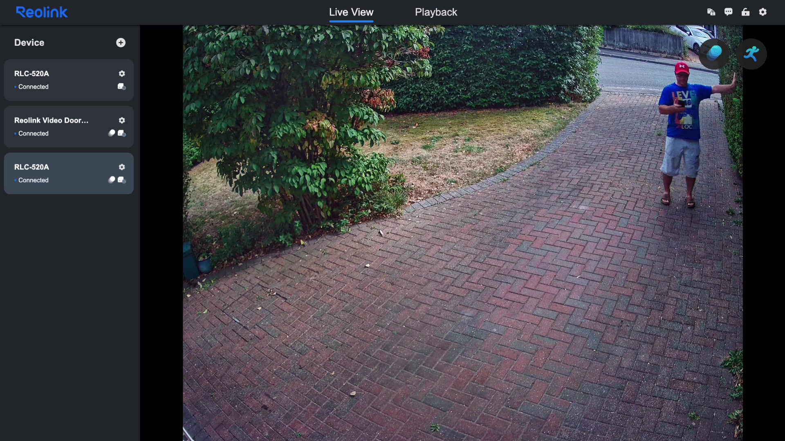 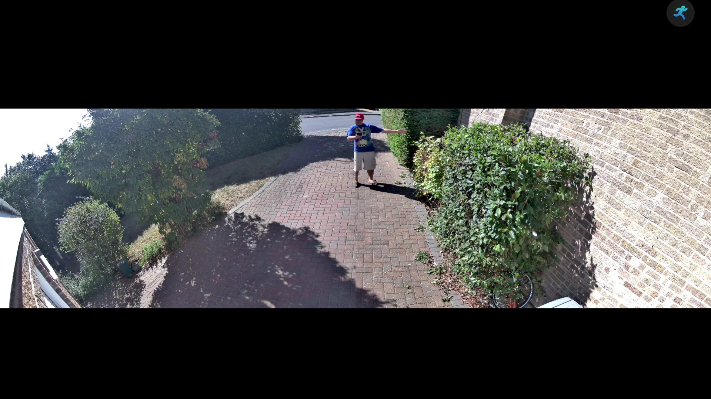 Okay, time to swap out the old RLC-520A and see what this dual-camera setup can actually do. The mounting process was pretty straightforward: same screw pattern, same PoE connection. Within a few minutes, I had the camera up and connected to the network.The difference in coverage is immediately obvious and, frankly, quite dramatic. With the old RLC- 520A, I could see a decent chunk of the front garden, but there were definite blind spots along the edges. Someone approaching from the far left or the far right could potentially avoid detection until they were quite close to the house. With the Duo 3 PoE, I can pretty much see the entire front garden area, right from the fence line on one side to the driveway on the other side. It’s like having two cameras covering overlapping zones but getting it all in one continuous stream.
The Dual Camera Stitching
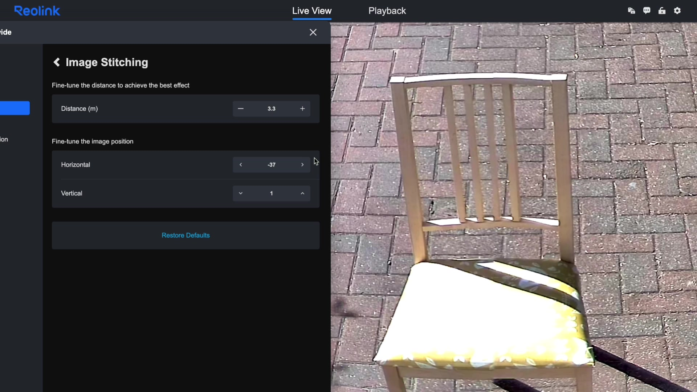 The join line between the two camera feeds is there if you're looking for it. I spent a fair bit of time in the settings trying to get it as seamless as possible. The camera software lets you adjust things like the overlap between the two images and the blending algorithm used to merge them. It's probably good enough for security monitoring. In practice, you barely notice it, and the benefits from the ultra-wide coverage far outweigh the minor visual compromise.I haven’t yet mapped out the new detection zones in Frigate to account for the new field of view, but that’s just going to be a matter of drawing a few polygons.
Seamless Home Assistant Integration
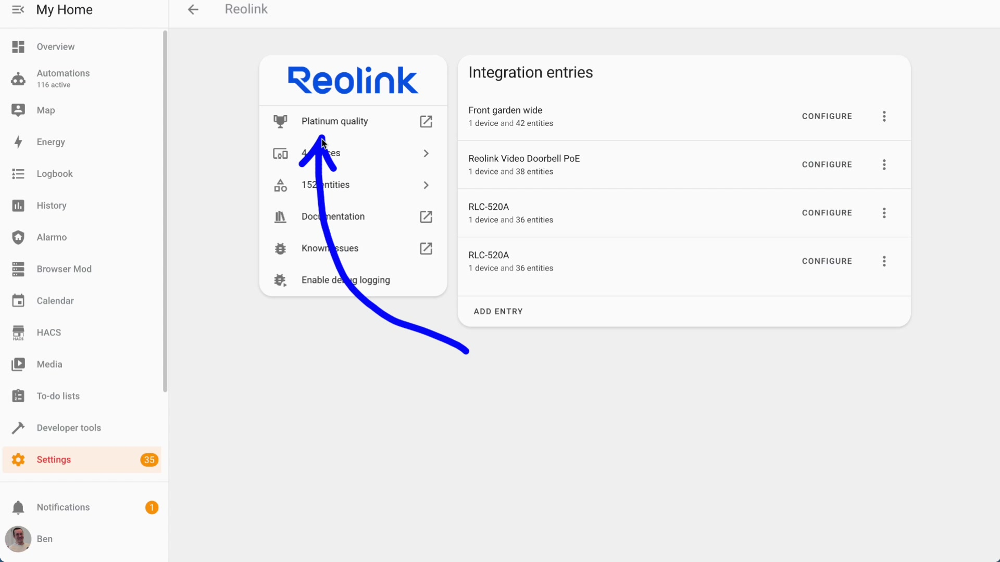 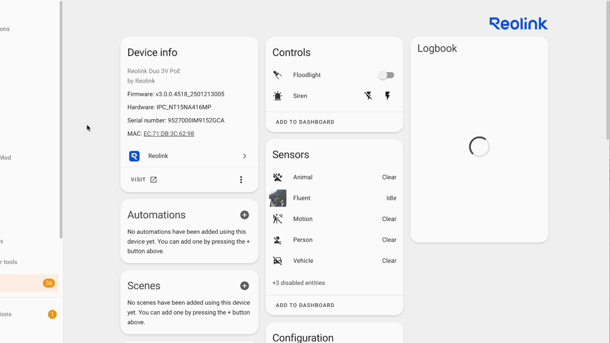 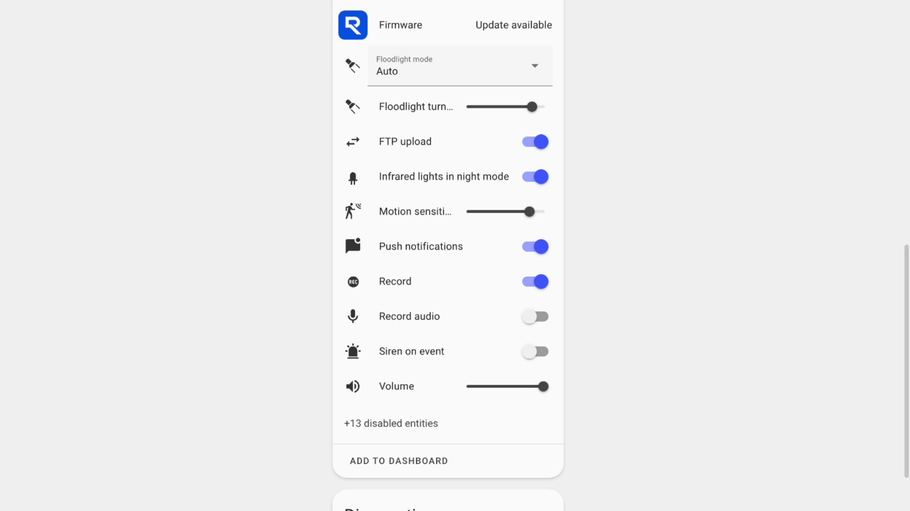The setup process is wonderfully straight- forward as well. You just go into Settings, Devices & Services, click “Add Integration,” search for Reolink, enter the camera’s IP address, enter your credentials, and within a few seconds, Home Assistant discovers all the camera’s capabilities and adds the appropriate entities.
With the Duo 3 PoE, you get a comprehensive set of controls and sensors. There are switches for the built-in floodlight and siren, binary sensors for person and animal detections, as well as motion detection, and camera entities for both the mainstream and substream. You even get controls for more granular settings like motion sensitivity, floodlight behavior when motion is detected, siren volume levels, and whether the infrared illuminators activate automatically at night.
Comparing this to my existing RLC-520A, the entity lists are almost identical, which makes sense since they’re both modern Reolink cameras with similar feature sets. The main difference is just the resolution and aspect ratio of the camera’s streams themselves.
I’ve got a Frigate card set up in my main dashboard that shows live feeds from all the cameras. Swapping to the new camera was literally just a case of editing the card configuration and changing the device reference from the old camera to the new one. Two minutes of work, and I was back up and running. The only thing you might notice is as you flick between them, one of the cards suddenly shrinks, and then when you go back to a more standard aspect ratio, it suddenly jumps up again.
Frigate Configuration for the Duo 3 PoE
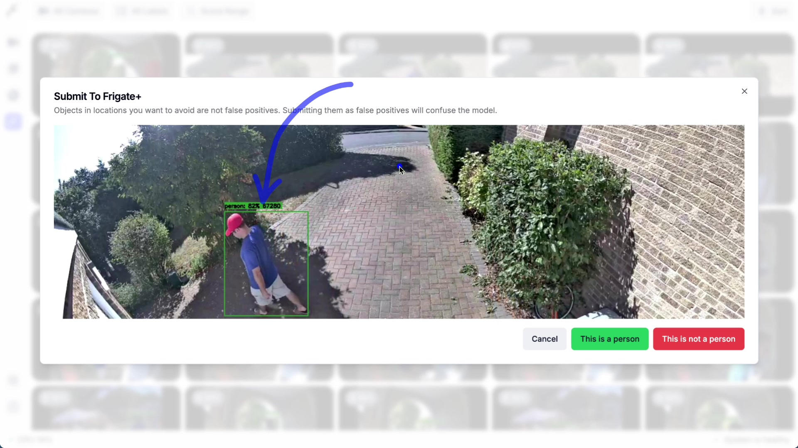 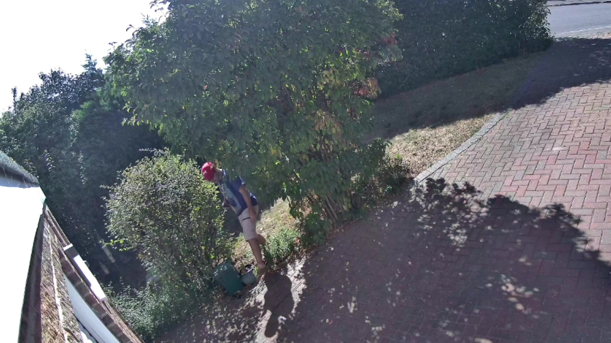 Getting the new camera to work with Frigate was remarkably straightforward. Honestly, it quite surprised me, given the unusual 32x9 aspect ratio. I basically just copied the configuration from my existing RLC-520A, updated the camera name and IP address, and changed the resolution settings to match the Duo 3 PoE specifications. The mainstream runs at 7680x2160, as I mentioned earlier, that's where you get the ultra-wide look, and the substream will use 1536x432. Everything else in the config stayed the same.Frigate picked up the new camera immediately, started processing the feed, and began to detect objects without any hiccups. The object detection and accuracy seem to be just as good as my other cameras, which is impressive considering the different aspect ratio and the fact that it is essentially processing a stitched image. The wider field of view means fewer missed events at the edges of the frame, which was exactly what I was hoping for. Previously, someone could potentially walk along the fence line or the hedge line in my case and only get detected for a few seconds when they crossed into the camera’s view. Now, I’m getting much earlier detection as they come into the garden from the back, which gives me better advanced warning and longer clips to review as well.
Deep Dive into Reolink Apps (Desktop & Mobile)
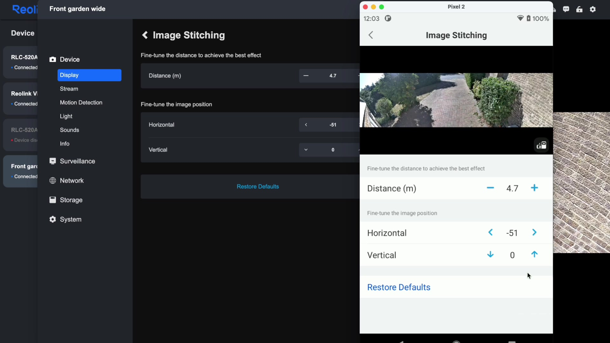 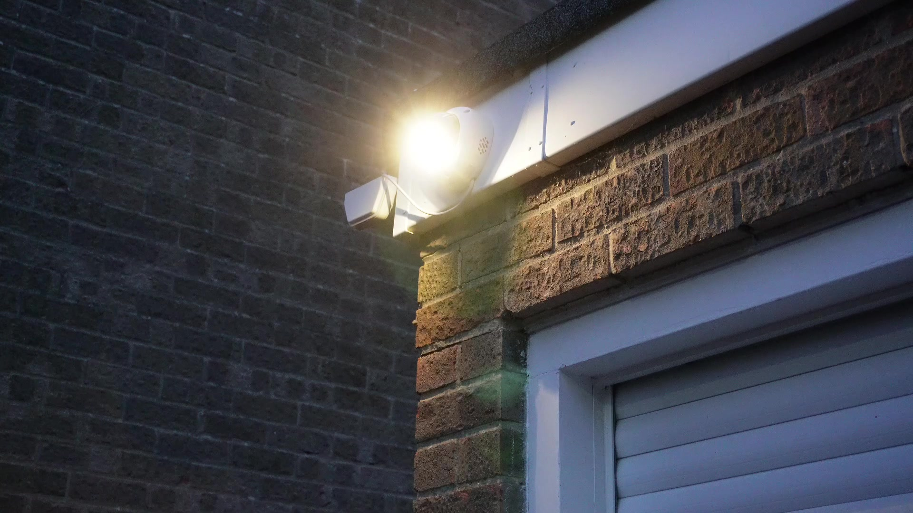The settings between both apps are refreshingly consistent. What you can do on your phone, you can also do on your computer. This isn’t always the case with security camera manufacturers, so kudos to Reolink for maintaining feature parity. You can configure way more through these apps than you can in the Home Assistant integration, as I said. For instance, you can completely remove the watermark from the stream image, adjust the timestamp format and position, fine-tune the motion detection sensitivity zones, and, importantly for the Duo 3 PoE, really dial in that dual-camera stitching together of the two streams.
The stitching settings are particularly worth exploring. You can adjust the overlap between the two camera images, change the blending algorithm, and even manually tweak the alignment if things look slightly off. When I first set up the camera, there was a notable misalignment that made the join lines quite obvious. After spending a few minutes in the app adjusting these settings, I got to a point where you really have to look for the seam to notice it.
One extra thing that I’ve noticed is in the night mode, if you turn on the floodlight, the glare you seem to get from the vandal-proof casing seems to reflect right back at the cameras, and it makes the image almost unusable. The infrared light is not quite as bad. You still get a little bit of glare, but if you look, you can definitely see the seam line much more easily because of the way the light is bouncing around inside that dome. This is something I hadn’t really anticipated, but it’s obviously a little bit of a problem. If you’re relying on this solely to have it as a floodlight to light the way so you can see people in color, then that might be a bit of a problem for you because you’d have to have some alternative means to light the driveway. If you’re setting up a Duo 3 PoE, definitely spend some time in the app getting everything tuned properly rather than accepting the defaults. It makes quite a big difference to the final image quality.
RTSP Stream Versatility
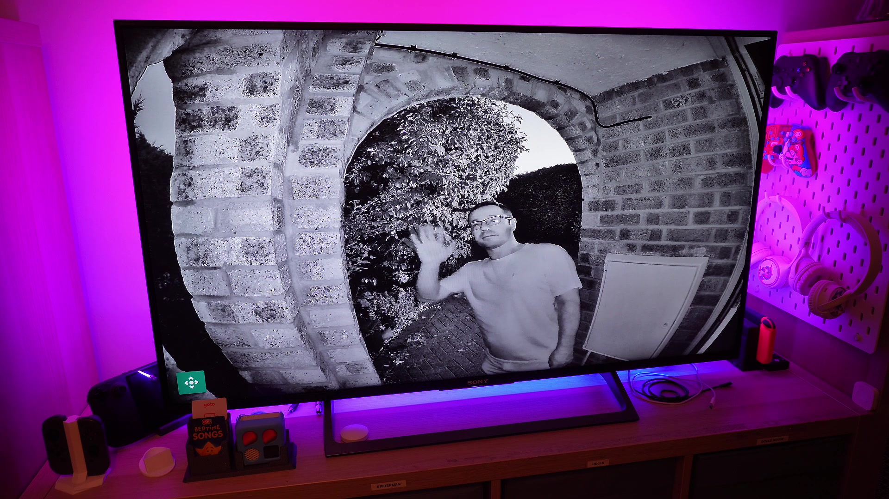 Since these cameras output standard RTSP streams, you can view them pretty much anywhere that supports video streaming. This is one of the big advantages of going with an established brand like Reolink rather than some more proprietary systems out there. I can pull up the front door feed, for example, on my TV using VLC or some other software if I want to see who's at the door from inside the living room. I can view the streams on my phone using an RTSP-compatible app. I can even embed them into custom dashboards or third-party monitoring systems. The RTSP URLs follow a predictable format, so once you've got one camera working, setting up additional cameras is just a matter of changing the IP address in the URL. No wrestling with different streaming protocols or vendor-specific APIs.Final Thoughts & Recommendation
So, the Duo 3 PoE is a solid upgrade if you need wider coverage than a traditional security camera can provide. The dual-camera approach works well in practice, the integration with Home Assistant is seamless, and it plays nicely with Frigate and other video analysis systems. Is the stitching perfect? No, there’s still a subtle join line if you’re looking for it. Is the wider field of view worth the minor compromise? I think so, yes, for my setup, definitely. The 180-degree coverage means I can now monitor the entire front garden with a single camera and eliminate all of those blind spots that would bother me a little bit, and get much earlier detection if anyone approaches the house from the side.
At roughly twice the price of the RLC-520A, it’s not cheap, but if you need that ultra-wide coverage, then there aren’t that many alternatives out there that work this well. And think about it: you’re effectively getting two cameras anyway.
What Do You Think?
So, what do you think? Are you running Reolink cameras in your setup, or are you using something else entirely? Let me know in the comments what your experience has been like with security camera integration. I’m always interested to hear about different approaches to the same problem. Don’t forget to hit like if this was useful and subscribe for more smart home projects where I dive into the nitty-gritty of making everything work together properly. I’ll catch you next time, and happy automating!
Links:
- Reolink Doorbell PoE link: https://amzn.to/4mP9RX7
- Reolink RLC-520A link: https://amzn.to/3Jqnu0G
- Reolink 3V POE link: https://amzn.to/4fOhBGO
- You can get 5% off with “ben5” if you order a Duo 3V from the official site: https://reolink.com/product/reolink-duo-3v-poe/?aff=1149
The Reolink 3V PoE was kindly sent to me from Reolink in exchange for a review.
This things is absolutely rock solid, and can take a whack or two (I dropped it on the floor, and I think it did more damage to my floor!). I’m pretty happy with the upgrade, so now have to find a new use for my old Reolink RLC-520A!
#reolink, #ReolinkSecurity, #ReolinkVandalProof
Video
You can watch the full video on YouTube here:
Support me to keep making videos

If you like the work I’m doing, please drop a like on the video, or consider subscribing to the channel.
In case you’re in a particularly generous mood, you can fund my next cup of coffee over on Ko-Fi
The links from some of my videos are affiliate links, which means I get a small kickback at no extra cost to you. It just means that the affiliate knows the traffic came from me.